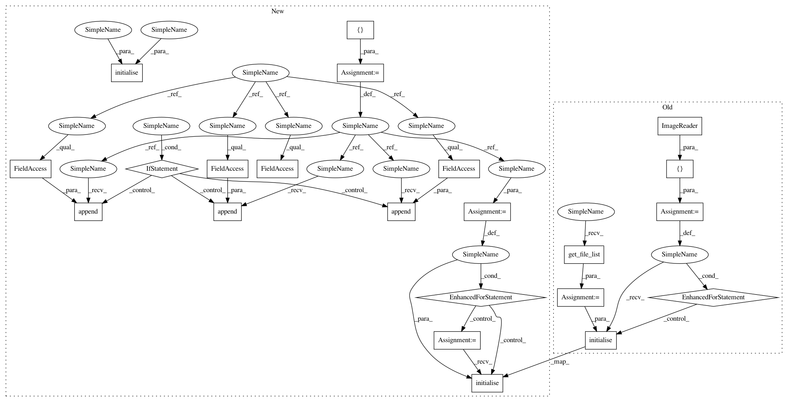

83f6726852bd539c427523bf4bf35f07b0744014,niftynet/application/regression_application.py,RegressionApplication,initialise_dataset_loader,#RegressionApplication#Any#Any#Any#,56
Before Change
// read each line of csv files into an instance of Subject
if self.is_training:
self.readers = [ImageReader(SUPPORTED_INPUT)]
if self.action_param.validate_every_n:
self.readers.append(ImageReader(SUPPORTED_INPUT))
else: // in the inference process use image input only
self.readers = [ImageReader(["image"])]
file_list = data_partitioner.get_file_list()
for reader in self.readers:
reader.initialise(data_param, task_param, file_list)
mean_var_normaliser = MeanVarNormalisationLayer(
image_name="image")
if self.net_param.histogram_ref_file:
histogram_normaliser = HistogramNormalisationLayer(
After Change
// read each line of csv files into an instance of Subject
if self.is_training:
file_lists = []
if self.action_param.validation_every_n > 0:
file_lists.append(data_partitioner.train_files)
file_lists.append(data_partitioner.validation_files)
else:
file_lists.append(data_partitioner.all_files)
self.readers = []
for file_list in file_lists:
reader = ImageReader(SUPPORTED_INPUT)
reader.initialise(data_param, task_param, file_list)
self.readers.append(reader)
else:
inference_reader = ImageReader(["image"])
file_list = data_partitioner.inference_list
inference_reader.initialise(data_param, task_param, file_list)
self.readers = [inference_reader]
mean_var_normaliser = MeanVarNormalisationLayer(
image_name="image")
In pattern: SUPERPATTERN
Frequency: 3
Non-data size: 22
Instances
Project Name: NifTK/NiftyNet
Commit Name: 83f6726852bd539c427523bf4bf35f07b0744014
Time: 2017-11-14
Author: wenqi.li@ucl.ac.uk
File Name: niftynet/application/regression_application.py
Class Name: RegressionApplication
Method Name: initialise_dataset_loader
Project Name: NifTK/NiftyNet
Commit Name: 83f6726852bd539c427523bf4bf35f07b0744014
Time: 2017-11-14
Author: wenqi.li@ucl.ac.uk
File Name: niftynet/application/regression_application.py
Class Name: RegressionApplication
Method Name: initialise_dataset_loader
Project Name: NifTK/NiftyNet
Commit Name: 9943f36fd3cf218775b735ddd41e2939487c0e0f
Time: 2017-11-14
Author: wenqi.li@ucl.ac.uk
File Name: niftynet/application/gan_application.py
Class Name: GANApplication
Method Name: initialise_dataset_loader
Project Name: NifTK/NiftyNet
Commit Name: 9943f36fd3cf218775b735ddd41e2939487c0e0f
Time: 2017-11-14
Author: wenqi.li@ucl.ac.uk
File Name: niftynet/application/autoencoder_application.py
Class Name: AutoencoderApplication
Method Name: initialise_dataset_loader